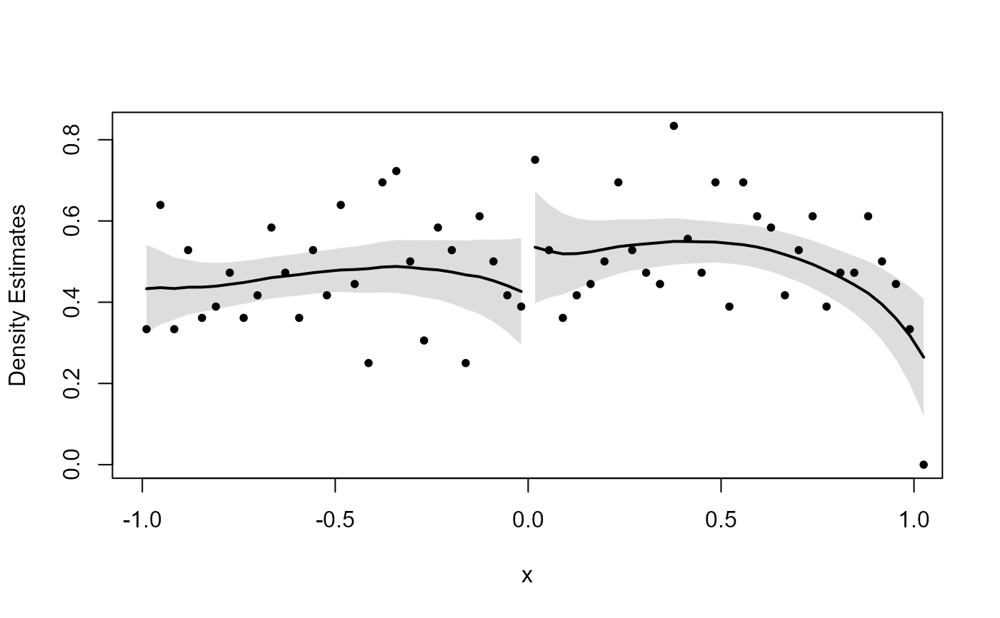
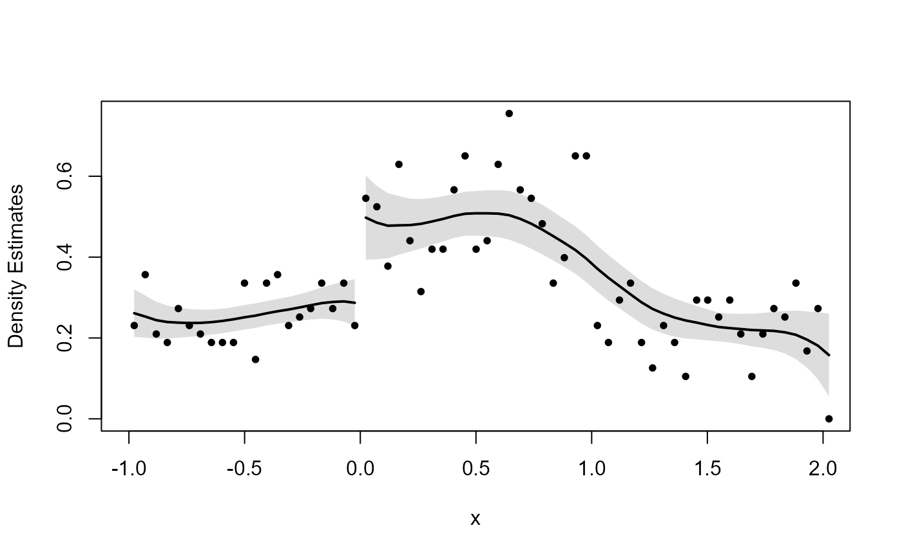

dc_test.Rddc_test implements the McCrary (2008) sorting test.
It is based on the DCdensity function in the rdd package.
dc_test(
runvar,
cutpoint,
bin = NULL,
bw = NULL,
verbose = TRUE,
plot = TRUE,
ext.out = FALSE,
htest = FALSE,
level = 0.95,
digits = max(3, getOption("digits") - 3),
timeout = 30
)Numerical vector of the running variable.
The cutpoint (defaults to 0).
The binwidth (defaults to 2*sd(runvar)*length(runvar)^(-.5)).
The bandwidth to use (by default uses bandwidth selection calculation from McCrary (2008)).
Logical flag specifying whether to print diagnostic information to
the terminal (defaults to TRUE).
Logical flag indicating whether to plot the histogram and density estimations
(defaults to TRUE). The user may wrap this function in additional graphical options
to modify the plot.
Logical flag indicating whether to return extended output.
When FALSE (the default) DCdensity will return only the p-value of the test.
When TRUE, DCdensity will return the additional information documented below.
Logical flag indicating whether to return an "htest" object
compatible with base R's hypothesis test output.
Numerical value between 0 and 1. Confidence level for confidence intervals.
Number of digits to display.
Numerical value specifying the maximum number of seconds (defaults to 30 seconds)
expressions in the function are allowed to run. Specify Inf to run all expressions
to completion.
If ext.out is FALSE, only the p value will be returned.
Additional output is enabled when ext.out is TRUE.
In this case, a list will be returned with the following elements:
The estimated log difference in heights at the cutpoint.
The standard error of theta.
The z statistic of the test.
The p-value of the test. A p-value below the significance threshold indicates that the user can reject the null hypothesis of no sorting.
The calculated size of bins for the test.
The calculated bandwidth for the test.
The cutpoint used.
A dataframe for the binning of the histogram. Columns are cellmp
(the midpoints of each cell) and cellval (the normalized height of each cell).
McCrary, J. (2008). Manipulation of the running variable in the regression discontinuity design: A density test. Journal of Econometrics, 142(2), 698-714. doi: 10.1016/j.jeconom.2007.05.005 .
# No discontinuity
x <- runif(1000, -1, 1)
dc_test(x, 0)
#> Binwidth:
#> 0.03598
#>
#> Bandwidth:
#> 0.4561
#>

#> Estimate for log difference in heights:
#> Estimate Std. Error lower.CL upper.CL z value Pr(>|z|)
#> 0.30209 0.20049 -0.09085 0.69504 1.50681 0.13186
#> ---
#> Signif. codes: 0 '***' 0.001 '**' 0.01 '*' 0.05 '.' 0.1 ' ' 1
#>
#> Confidence interval used: 0.95
#>
#> [1] 0.1318603
# Discontinuity
x <- runif(1000, -1, 1)
x <- x + 2 * (runif(1000, -1, 1) > 0 & x < 0)
dc_test(x, 0)
#> Binwidth:
#> 0.04864
#>
#> Bandwidth:
#> 0.7811
#>

#> Estimate for log difference in heights:
#> Estimate Std. Error lower.CL upper.CL z value Pr(>|z|)
#> 9.619e-01 1.908e-01 5.879e-01 1.336e+00 5.041e+00 4.637e-07 ***
#> ---
#> Signif. codes: 0 '***' 0.001 '**' 0.01 '*' 0.05 '.' 0.1 ' ' 1
#>
#> Confidence interval used: 0.95
#>
#> [1] 4.637009e-07